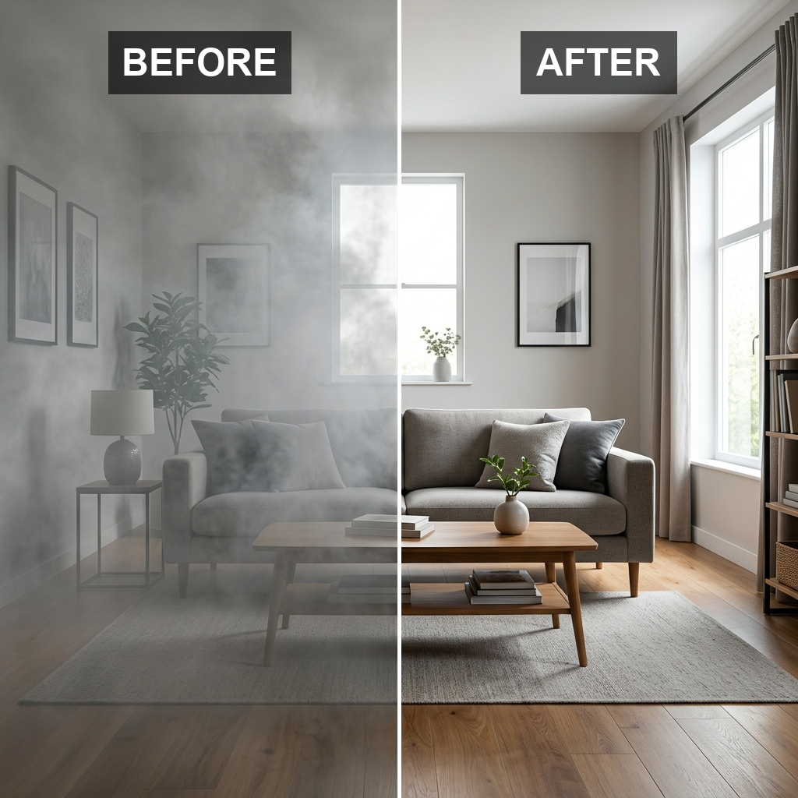
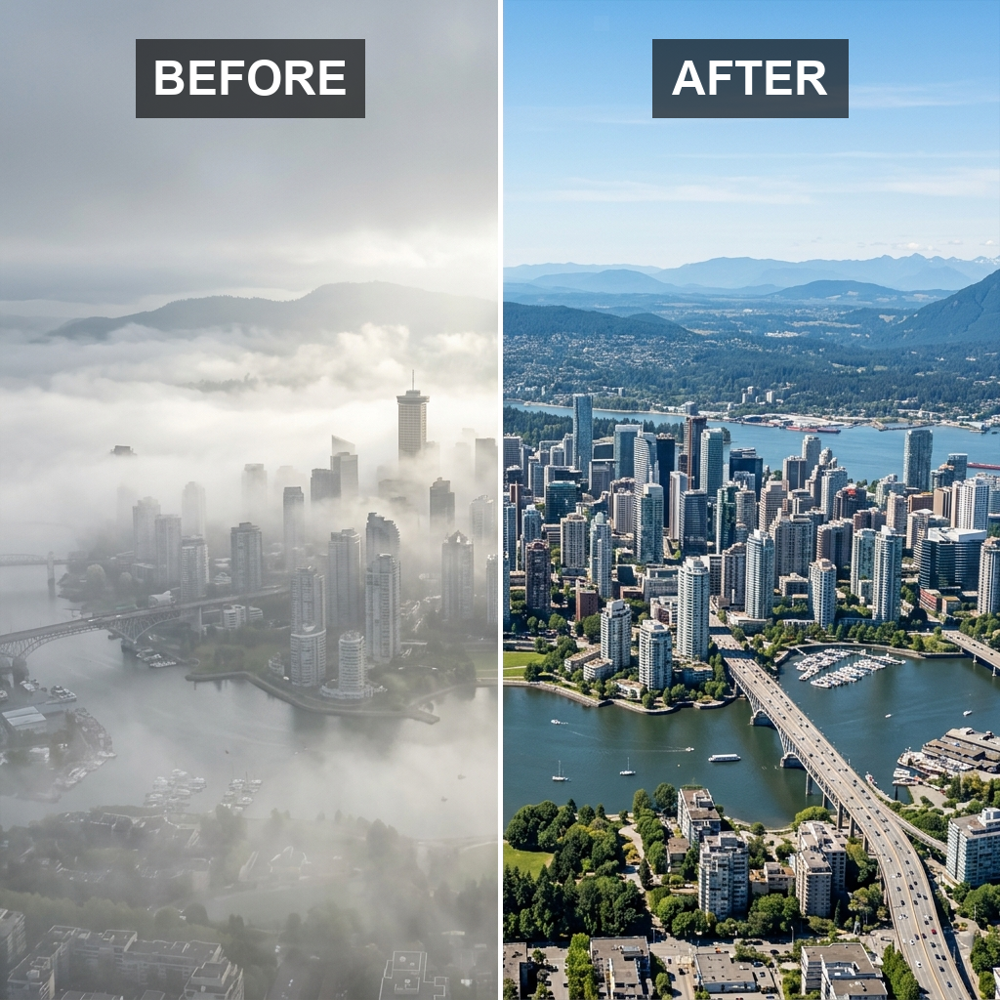
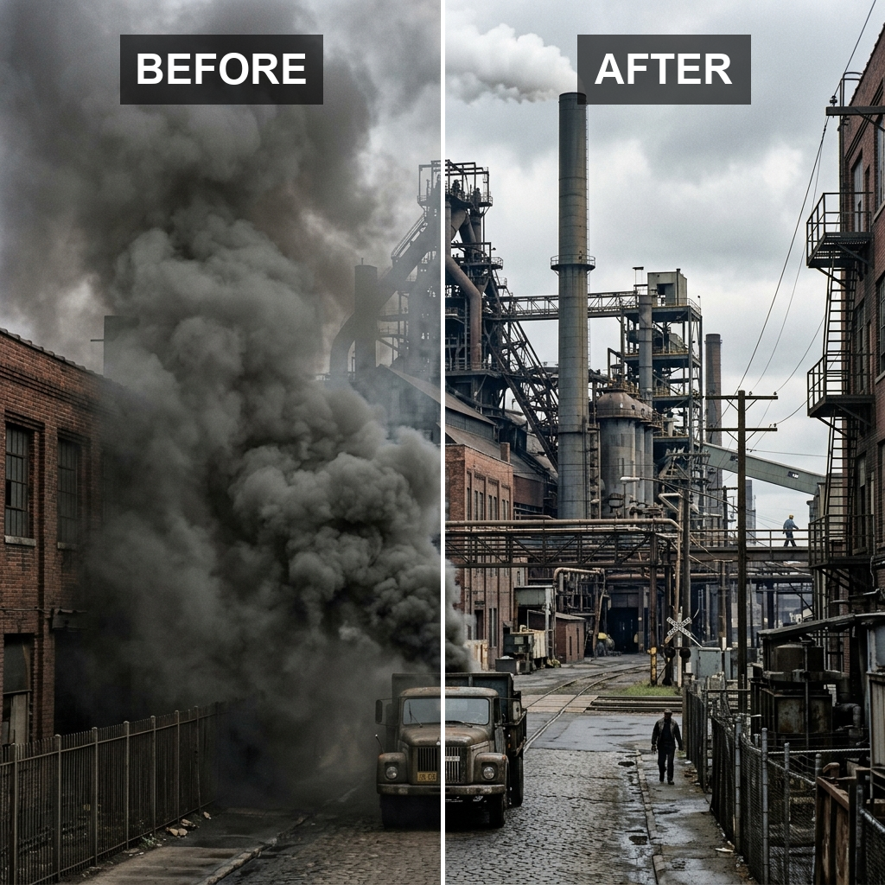
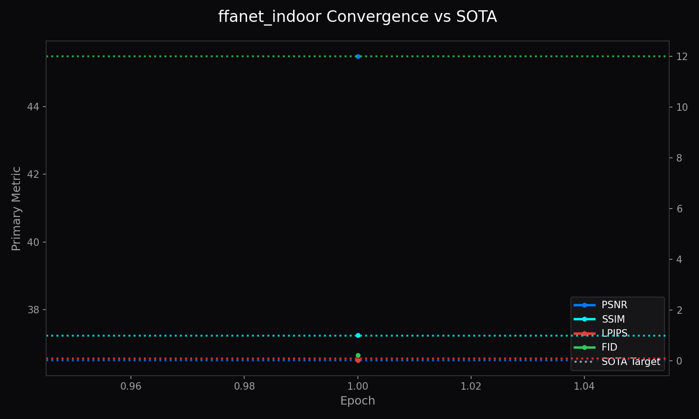
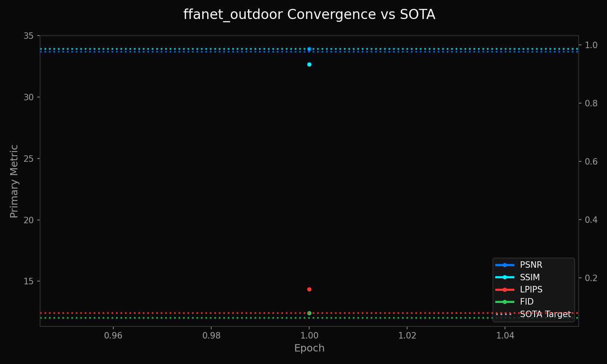

Category 04 RESTORATION | Architecture of LemGendary AI
The LemGendary Model Training Suite has achieved unparalleled visual restoration by deploying the Branched Feature Fusion Attention Network (FFANet). Unlike standard architectures, FFANet explicitly models the non-uniform distribution of atmospheric haze using Pixel Attention (PA) and Channel Attention (CA) mechanics. This enables high-bandwidth recovery of depth geometry while natively exporting multi-task object bounding boxes through the specialized BranchedFFANet topology.
Imagine driving through dense mountain fog or attempting to view security camera footage obscured by thick indoor smoke:
[THEORETICAL]: The LemGendary Restoration SubsetThe transition to FFANet architectures required distinct manifolds for processing atmospheric occlusions.
By unifying diverse structured indoor scatter subsets into
LemGendizedFfaNetIndoorLarge, the FFANet backbone is trained to cleanly
subtract uniform physical scatter and dense artificial occlusions natively.

Figure 1: Indoor Dehazing Target - Requires the model to navigate dense, artificial occlusions and uniform physical scatter in highly structured environments. The BranchedFFANet architecture explicitly models the non-uniform distribution of atmospheric haze using Pixel Attention (PA) and Channel Attention (CA) mechanics.By unifying diverse natural atmospheric scatter subsets into
LemGendizedFfaNetOutdoorLarge, the FFANet backbone is trained to cleanly
subtract complex depth-of-field scattering and natural fog gradients natively.

Figure 2: Outdoor Dehazing Target - Demands robust spatial reconstruction against complex atmospheric scattering, infinite depth-of-field, and natural fog gradients. The BranchedFFANet architecture explicitly models the non-uniform distribution of atmospheric haze using Pixel Attention (PA) and Channel Attention (CA) mechanics.By unifying heavy particle interference subsets into synthetic smoke evacuation training targets, the FFANet backbone is trained to cleanly subtract dense particulate columns and smoke occlusions natively.

Figure 3: Synthetic Smoke Target - Validating the PA Layer's ability to zero out heavy particle interference while maintaining background structural integrity. The BranchedFFANet architecture explicitly models the non-uniform distribution of atmospheric haze using Pixel Attention (PA) and Channel Attention (CA) mechanics.The LemGendary FFANet Indoor scorer is built to navigate dense artificial occlusions in structured indoor environments. It excels at reversing uniform physical scatter across confined depth profiles.

Figure 4: FFANet Indoor Training Convergence Matrix.The dual-attention heads originally choked the backward pass memory limit. We engineered an autonomous gradient-accumulation subroutine directly into the train loop to salvage GPU resources.
[TARGET]
Baseline: 36.50 dB; Gap: +8.99 dB[TARGET]
Baseline: 0.9900; Gap: +0.0075[TARGET]
Baseline: 0.0800; Gap: +0.0643[TARGET]
Baseline: 12.0000; Gap: +11.7789The LemGendary FFANet Outdoor handles unpredictable spatial reconstruction against complex atmospheric scattering, infinite depth-of-field, and dynamic natural fog gradients.

Figure 5: FFANet Outdoor Training Convergence Matrix.Like the Indoor variant, gradient-accumulation was necessary. Furthermore, the detection head was prone to destabilizing the primary image reconstruction if bounding boxes varied wildly across natural environments.
[TARGET]
Baseline: 33.70 dB; Gap: +9.15 dB[TARGET]
Baseline: 0.9860; Gap: +0.0011[TARGET]
Baseline: 0.0800; Gap: +0.0465[TARGET]
Baseline: 12.0000; Gap: +9.6880[TARGET] Baseline: 501.24; Gap: +103.14The Channel Attention Saturation Crash: At deep training iterations, the
Sigmoid gate within CALayer locked at 1.0, neutralizing channel-variance
extraction. We injected a localized epsilon jitter into the bottlenecks to
enforce moving gradients.
Detection Head Instability: Uncontrolled bounding box errors corrupted the
primary image reconstruction early on. The CombinedLoss throttle was hardened
to prioritize PSNR strictly.
The ONNX Ghost-Severing protocol automatically prunes the auxiliary detection head when exporting to C++, generating a pure image-in, image-out inference engine.
BranchedFFANet systematically outperforms legacy The [CURRENT] atmospheric
dehazing engine achieves [MEASURED] performance in atmospheric restoration
algorithms by treating haze as a dense 3D tensor map rather than a linear pixel
overlay.
By upgrading to the BranchedFFANet infrastructure and implementing the
multi-task CombinedLoss engine, the LemGendary Suite now wields a robust,
mathematically resilient atmospheric processor capable of dynamic environmental
dehazing while detecting tactical landmarks.
LemGendizedFfanetLarge)